| # | GIF | Lectura | Frames | Postura | Tamaño | Hueco | Confianza | Por qué |
|---|---|---|---|---|---|---|---|---|
| 00 | 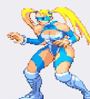 |
Guardia / idle | 19 | de pie | 63–100 ancho 73–91 |
#1, #2, #3, #4, #5, #6, #7, #8, #9, #10, #11, #12, #13, #14, #15, #16, #17, #18, #19 | media | 16 frames de pie, pies en la misma linea, brazos delante |
| 01 | 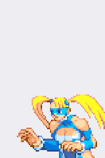 |
Idle + reaccion | 21 | de pie | 56–157 ancho 50–104 |
#1, #2, #3, #4, #5, #6, #7, #8, #9, #10, #11, #12, #13, #14, #15, #16, #17, #18, #19, #20, #21 | media | poses de pie y una caida al final |
| 02 | 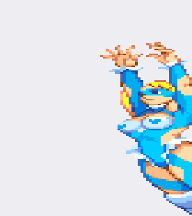 |
Acrobacia (pino y voltereta) | 18 | de pie | 47–153 ancho 66–136 |
#1, #2, #3, #4, #5, #6, #7, #8, #9, #10, #11, #12, #13, #14, #15, #16, #17, #18 | media | el cuerpo gira; hay frames tapados |
| 03 | 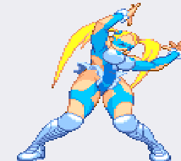 |
Patada descendente + super | 19 | de pie | 30–112 ancho 45–126 |
#1, #2, #3, #4, #5, #6, #7, #8, #9, #10, #11, #12, #13, #15, #16, #17, #18, #19 | baja | incluye una bota gigante, efecto del super |
| 04 | 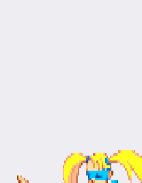 |
Patadas altas | 23 | de pie | 53–132 ancho 57–102 |
#1, #2, #3, #4, #5, #6, #7, #8, #9, #10, #11, #12, #13, #14, #15, #16, #17, #18, #19, #20, #21, #22, #23 | media | piernas por encima de la cadera |
| 05 | 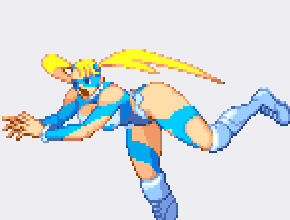 |
Patada voladora | 16 | de pie | 89–108 ancho 65–143 |
#1, #2, #3, #4, #5, #6, #7, #8, #9, #10, #11, #12, #13, #14, #15, #16 | media | 7 frames; pies muy por encima de la linea de suelo |
| 06 | 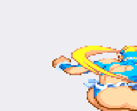 |
Patadas medias y aereas | 15 | de pie | 80–111 ancho 78–137 |
#1, #2, #3, #4, #5, #6, #7, #8, #9, #10, #11, #12, #13, #14, #15 | media | mezcla suelo y aire |
| 07 | 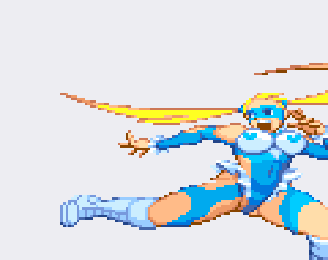 |
Punetazos y voltereta | 16 | de pie | 55–128 ancho 76–162 |
#1, #2, #3, #4, #5, #6, #7, #8, #9, #10, #11, #12, #13, #14, #15, #16 | baja | brazo extendido a la altura del pecho |
| 08 | 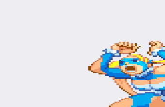 |
Golpes varios | 17 | tumbada | 46–108 ancho 70–168 |
#1, #2, #3, #4, #5, #6, #7, #8, #9, #10, #11, #12, #13, #14, #15, #16, #17 | baja | punos y piernas mezclados |
| 09 | 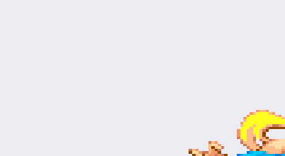 |
Barridos y patadas bajas | 14 | tumbada | 54–108 ancho 82–199 |
#1, #2, #3, #4, #5, #6, #7, #8, #9, #10, #11, #12, #13, #14 | media | pierna por debajo de la cadera |
| 10 | 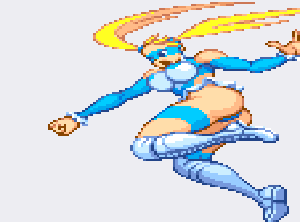 |
Patadas en el aire | 16 | de pie | 68–109 ancho 67–148 |
#1, #2, #3, #4, #5, #6, #7, #8, #9, #10, #11, #12, #13, #14, #15, #16 | media | los pies no tocan la linea de suelo |
| 11 | 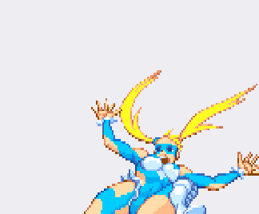 |
Tumbada y ataque al suelo | 16 | tumbada | 47–132 ancho 47–160 |
#1, #2, #3, #4, #5, #6, #7, #8, #9, #10, #11, #12, #13, #14, #15, #16 | baja | cuerpo horizontal |
| 12 | 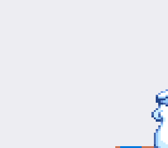 |
Derribo en el suelo | 17 | tumbada | 25–119 ancho 26–135 |
#1, #2, #3, #4, #5, #6, #7, #8, #9, #10, #11, #12, #13, #14, #15, #16, #17 | media | casi todos los frames horizontales |
| 13 | 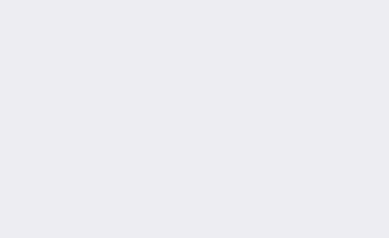 |
Suelo y poses | 18 | de pie | 53–147 ancho 48–241 |
#1, #2, #3, #4, #5, #6, #7, #8, #9, #10, #11, #12, #13, #14, #15, #16, #17, #18 | baja | poses sueltas en el suelo |
| 14 | Agachada y patada baja | 15 | de pie | 63–128 ancho 76–120 |
#1, #2, #3, #4, #5, #6, #7, #8, #9, #10, #11, #12, #13, #14, #15 | media | altura reducida a la mitad | |
| 15 | 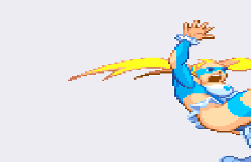 |
Suelo (variante) | 17 | de pie | 46–116 ancho 64–181 |
#1, #2, #3, #4, #5, #6, #7, #8, #9, #10, #11, #12, #13, #14, #15, #16, #17 | baja | repite posturas de la banda 12 |
| 16 | 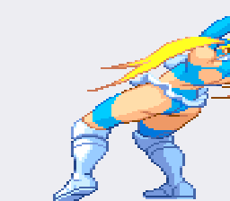 |
Rodillas y suelo | 18 | de pie | 48–110 ancho 75–126 |
#1, #2, #3, #4, #5, #6, #7, #8, #9, #10, #11, #12, #13, #14, #15, #16, #17, #18 | baja | arrodillada |
| 17 | 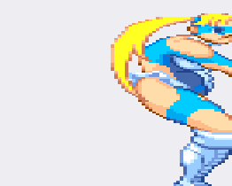 |
Sentada en el suelo | 17 | de pie | 46–103 ancho 26–129 |
#1, #2, #3, #4, #5, #6, #7, #8, #9, #10, #11, #12, #13, #14, #15, #16, #17 | baja | cadera apoyada |
| 18 | 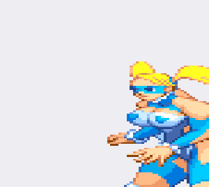 |
Golpes y caida | 18 | de pie | 78–132 ancho 51–148 |
#1, #2, #3, #4, #5, #6, #7, #8, #9, #10, #11, #12, #13, #14, #15, #16, #17, #18 | baja | secuencia larga, acaba en el suelo |
| 19 | 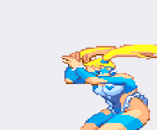 |
Patadas altas (variante) | 18 | de pie | 58–128 ancho 55–154 |
#1, #2, #3, #4, #5, #6, #7, #8, #9, #10, #11, #12, #13, #14, #15, #16, #17, #18 | baja | parecida a la banda 4 |
| 20 | 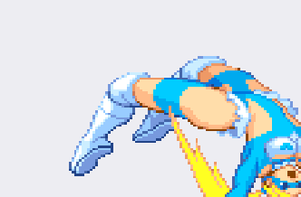 |
Patadas aereas y caida | 15 | tumbada | 36–107 ancho 71–164 |
#1, #2, #3, #4, #5, #6, #7, #8, #9, #10, #11, #12, #13, #14, #15 | baja | sale y cae |
| 21 | Vuelta y suelo | 15 | tumbada | 40–101 ancho 72–155 |
#1, #2, #3, #4, #5, #6, #7, #8, #9, #10, #11, #12, #13, #14, #15 | baja | rueda lateral | |
| 22 | 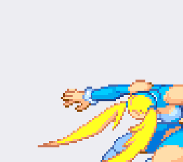 |
Lanzamiento / agarre | 18 | tumbada | 44–114 ancho 56–129 |
#1, #2, #3, #4, #5, #6, #7, #8, #9, #10, #11, #12, #13, #14, #15, #16, #18 | baja | brazos hacia delante, cuerpo del rival no dibujado |
| 23 | 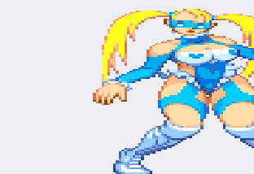 |
De pie y caida | 15 | de pie | 51–105 ancho 87–154 |
#1, #2, #3, #4, #5, #6, #7, #8, #9, #10, #11, #12, #13, #14, #15 | baja | acaba tumbada |
| 24 | Tumbada | 15 | tumbada | 40–139 ancho 50–147 |
#1, #2, #3, #4, #5, #6, #7, #8, #9, #10, #11, #12, #13, #14, #15 | media | cuerpo horizontal en los tres frames | |
| 25 | 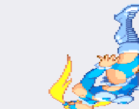 |
Mezcla: salto + otro personaje | 15 | de pie | 57–109 ancho 72–140 |
#1, #2, #3, #4, #5, #6, #7, #8, #9, #10, #11, #12, #13, #14, #15 | baja | aparece una carretilla y un personaje que no es Mika |
| 26 | 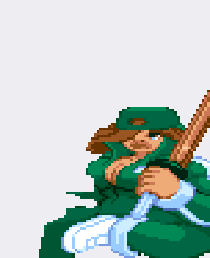 |
OTRO PERSONAJE: ninja verde con baston | 15 | de pie | 107–127 ancho 67–103 |
#1, #2, #3, #4, #5, #6, #7, #8, #9, #10, #11, #12, #13, #14, #15 | alta | no es R. Mika |
| 27 | 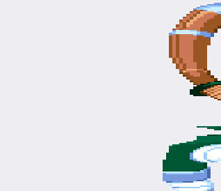 |
OTRO PERSONAJE: ninja verde + neumatico | 14 | de pie | 46–135 ancho 64–157 |
#1, #2, #3, #4, #5, #6, #7, #8, #9, #10, #11, #12, #13, #14 | alta | no es R. Mika |
| 28 | 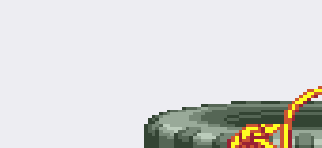 |
Neumatico (objeto) | 13 | tumbada | 50–72 ancho 85–159 |
#1, #2, #3, #4, #5, #6, #7, #8, #9, #10, #11, #12, #13 | alta | sin personaje |
| 29 | 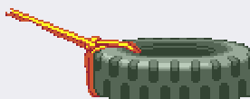 |
Neumatico (objeto) | 2 | tumbada | 50–53 ancho 131–136 |
#1, #2 | alta | sin personaje |
Frame data: qué es y qué se puede sacar de una hoja
Un sprite es un dibujo; el frame data es cuándo cuenta cada dibujo. En
nuestro modelo original está guardado y se lee así (voltia/sheet.json):
| Animación | Frames | fps | Bucle | Duración |
|---|---|---|---|---|
| stance | 15 | 10 | sí | 1,50 s |
| walk | 6 | 10 | sí | 0,60 s |
| jump | 4 | 9 | no | 0,44 s |
| punch_weak | 3 | 14 | no | 0,21 s |
| punch_strong | 6 | 11 | no | 0,55 s |
| kick_weak | 3 | 13 | no | 0,23 s |
| uppercut | 5 | 10 | no | 0,50 s |
| spinkick | 6 | 12 | no | 0,50 s |
Y de ahí sale la tabla de combate: arranque (frames hasta que el golpe existe), activo (frames en los que sí golpea) y recuperación (frames hasta poder volver a actuar). Con 3 frames a 14 fps, un golpe débil es arranque 1 / activo 1 / recuperación 1: 71 ms en total. Eso es lo que hace que se sienta rápido sin ser injugable.
En la hoja de R. Mika eso no está. Un PNG no dice a qué velocidad va cada fila ni en qué frame golpea: eso vive en el código del juego, no en el dibujo. Lo único honesto es dar los frames contados (columna «Frames») y una propuesta de tiempo, marcada como propuesta. El GIF de cada fila va a 12 fps solo para poder verlo.
Cómo está partido (y dónde puede fallar)
- Bandas: filas de la hoja 100 % magenta separan las secuencias. Salen 30.
- Trozos: cada figura se separa por componentes conexas; un trozo suelto (coleta, guante) se pega a su figura si es pequeño y está a menos de 6 px.
- Orden: de izquierda a derecha dentro de la banda.
- Falla: si una banda contiene dos animaciones seguidas, aquí salen juntas en una sola fila. Y al revés: una figura con la coleta muy separada puede quedar como frame propio.
- No es Mika: las bandas 26 y 27 son otro personaje (ninja verde con bastón) y las 28–29 son un neumático. Están puestas aquí para que no confundan, no porque sirvan.
Si quieres, corto cualquier banda en sub-animaciones por pose (te digo dónde empieza cada una con el frame exacto), o me quedo solo con las de Mika y tiro el resto.